Version 1.0 · July 2026
Subten is intended for people aged 18 and over.
Welcome to the user manual for Subten — the body-recomposition coach for iPhone and Apple Watch. Subten combines food logging (AI photo scanning, barcode, search), an adaptive calorie and macro engine that learns from your real results, a training module, deep Apple Health integration, and an AI mentor.
This manual covers the whole app: from creating an account and the onboarding interview, through every tab and feature, to subscriptions, privacy and troubleshooting. It is a how-to-use guide: for every feature you will find what it is for, how to operate it step by step, and what the app shows you and why.
No prior nutrition knowledge is assumed. Wherever the app relies on a concept (calorie deficit, macros, energy availability, adaptive targets), the manual briefly explains it in plain language.
You can read the manual two ways:
| Part | Contents |
|---|---|
| I — Introducing Subten | What Subten is, key concepts (the energy model, adaptive targets, calibration, Free vs Premium), a map of the screens. |
| II — Getting started | Account creation, sign-in options, the 7-step onboarding, first-day setup. |
| III — The five tabs | One chapter per tab: Today, Food, Training, Progress, Coach. |
| IV — The adaptive engine | How your calorie and macro targets evolve from your real data, and the built-in strategies (cheat meal, diet break, refeed, plateau protocol). |
| V — Apple Watch & shortcuts | The Watch app, complications, the Action Button and Siri shortcuts. |
| VI — Apple Health | Exactly what Subten reads and writes, per-type switches, health alerts. |
| VII — Premium & subscription | Free vs Premium, trial, promo codes, Sport Packs, restoring purchases. |
| VIII — Settings, privacy & account | Profile, reminders, data export/import, AI consent, deleting your account. |
| IX — Troubleshooting & FAQ | Common problems and their solutions. |
| Appendix | Glossary. |
Screen chapters (Part III) share a fixed structure: What it is for → Quick start → Step by step → Fields and options → Connections to other screens → Common mistakes → Limitations.
Monospace marks something you type.Note: Subten’s interface is available in English, Slovak and Czech. This manual uses the English interface; the Slovak and Czech editions of the manual use the corresponding localized labels.
Subten is an iOS app (with an Apple Watch companion) for body recomposition — losing fat, building muscle, or both. Its tagline is blunt: “−10 kg. No excuses.” Underneath the bluntness sits a careful engine:
Subten is designed for adults: the app enforces an 18+ age gate during onboarding.
Subten uses a single, deliberately simple energy formula on every screen:
Remaining = Daily Goal − Eaten
Your Daily Goal already accounts for your planned activity. Unlike many calorie apps, exercise does not inflate your remaining budget: a workout does not “earn” you extra food by default. Activity from Apple Health is shown for information. Only when your measured movement clearly exceeds your plan does the app extend the day’s target, shown as Goal + Extra movement. This prevents the classic double-counting trap where optimistic exercise estimates cancel out your deficit.
Your initial targets come from a standard estimate (the Mifflin–St Jeor equation plus an activity multiplier). Estimates are wrong for almost everyone — so Subten treats them only as a starting point. For roughly the first two weeks the app is calibrating: it needs enough logged days and weigh-ins before it trusts the data. After that, targets are re-derived weekly from your real intake and real weight trend. Part IV explains the rules and safety rails in detail.
Your training plan drives your nutrition targets (training days can carry different targets than rest days — see day types below). What Apple Health measures is used to check reality against the plan, not to rewrite it minute by minute.
Each day has a type — Strength, Cardio, Rest or Custom — shown as a badge on the Food tab. Day types allow carb cycling: the daily target can differ by day type. Special day types set by strategies (cheat day, refeed, diet break) are excluded from the weekly adaptation so one planned high day doesn’t distort your statistics.
The core loop is free: food logging by search, barcode and manual entry, the dashboard, the My Plan training tab, progress tracking, Apple Health sync, reminders, and data export/import. Premium unlocks the AI features (photo scanning, label scanning, meal plans, the Coach) and the full training module (Gym, Sport, Personal Records). Chapter 9 has the full comparison.
The app has five tabs:
| Tab | What it is for |
|---|---|
| Today | Your day at a glance: energy ring, quick actions, steps, water, sleep and recovery, today’s training and meals. |
| Food | The food diary: log, edit and plan meals; AI meal plan and shopping list. |
| Training | Your training plan, workout library, active workout with rest timer, personal records. |
| Progress | Weight and trend chart, body measurements, AI body assessment, progress photos, streak. |
| Coach | The AI mentor: chat, daily and weekly reviews, meal plan, shopping list. |
Settings are reached from the gear icon on the Today tab.
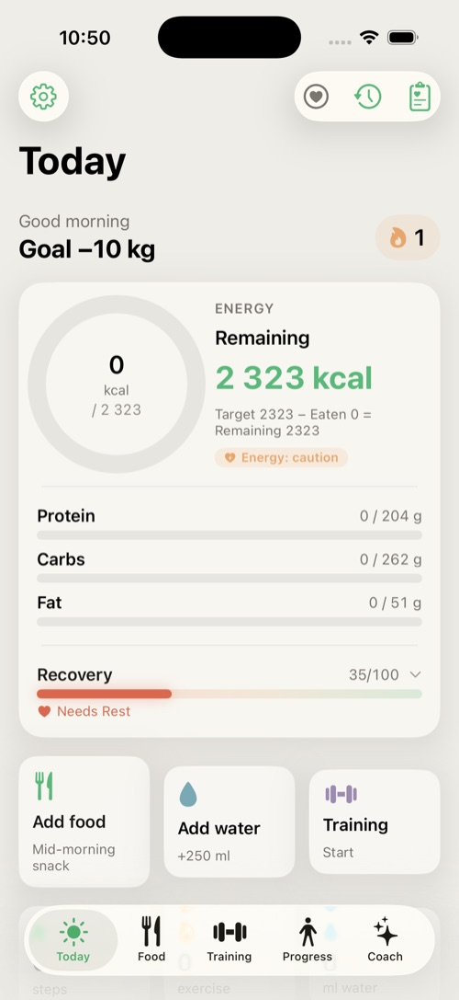
This part takes you from installing the app to your first fully set-up day.
On first launch Subten shows the sign-in screen. You can create an account three ways:
| Method | Notes |
|---|---|
| E-mail + password | Classic registration; you confirm your e-mail. |
| Sign in with Apple | Fastest on iPhone; you may hide your real e-mail. |
| Sign in with Google | Uses your Google account. |
You must agree to the Terms before the Apple/Google buttons become active.
Forgot your password? Tap Forgot password?, enter your e-mail, and follow the link in the reset message — it opens the app directly on the new-password screen.
Onboarding is a 7-step interview with a progress indicator (Step X / 7). You can go Back at any time; steps 5 and 6 can be skipped.
Warning: Subten is for adults only. The date-of-birth picker will not accept a date that makes you younger than 18.
Step 1 — Welcome. The app introduces itself. iPhone 15 Pro and newer also show a tip: you can map the Action Button to quick-add food.
Step 2 — Profile. Choose Gender, set your date of birth, height (120–220 cm), current weight and target weight (35–200 kg each). These feed the initial calorie estimate.

Step 3 — Activity level. Pick from Sedentary, Light, Moderate, Active, Very active — each card explains what it means in workouts per week. Choose honestly; the adaptive engine will correct estimation errors, but a realistic start converges faster.
Step 4 — Goal. Choose Burn fat, Build muscle, Recomposition or Maintain.
A live preview card shows your starting targets: daily kcal, protein/carbs/fat, the deficit or surplus, your estimated time to goal, and your BMR and TDEE.
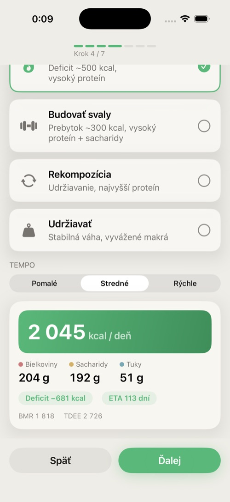
Step 5 — Body assessment (optional). A quick visual self-assessment that refines body-fat estimates. Tap Skip if you prefer.
Step 6 — Training plan (optional). Pick a training split: Full Body 3×, Upper/Lower 4×, Bro Split 5× or Push/Pull/Legs 6×. You can change or build a custom plan later on the Training tab.
Step 7 — Apple Health. Subten explains what it wants to read (weight, steps, heart data, sleep…). Tap Allow access and confirm in the iOS sheet. You can also skip this and enable it later in Settings → Health. Tap Done — your profile is saved and your free trial starts.
The Today tab is your home screen: one glance tells you how the day is going — energy budget, activity, water, recovery, planned training and logged meals. It is also the launch pad for the most frequent actions.
From top to bottom (cards appear only when relevant):
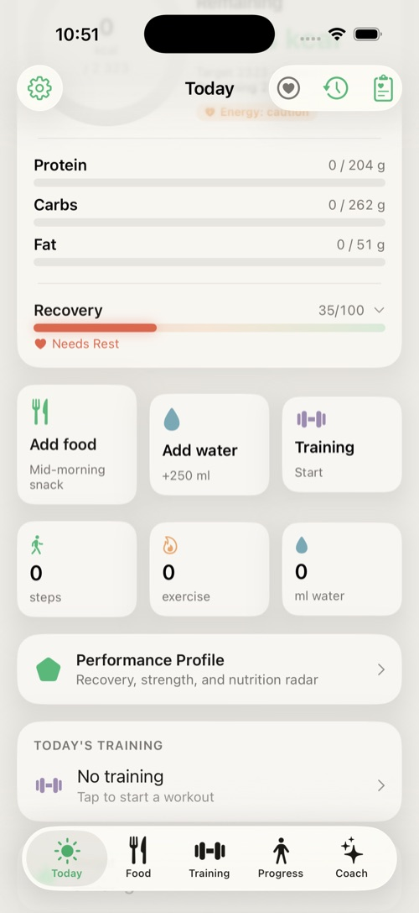
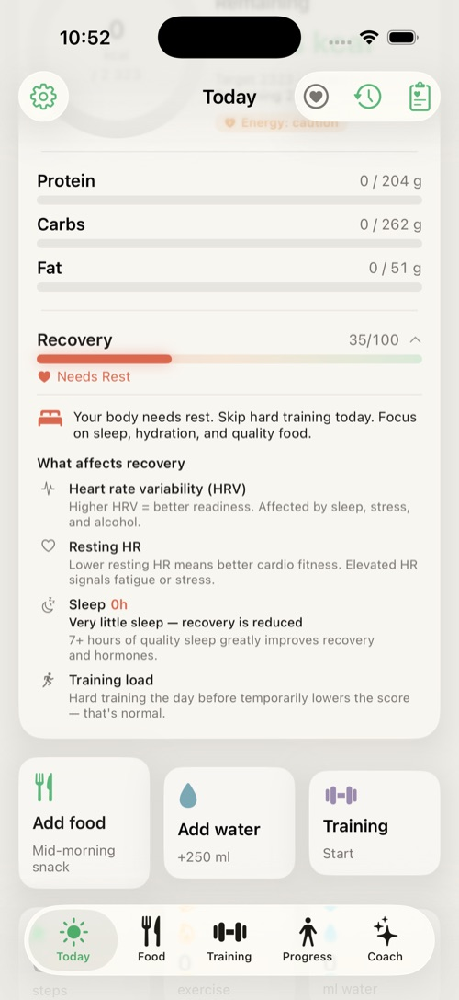
Note — no Apple Watch required. Subten reads the recovery score and every health metric (HRV, heart rate, sleep, SpO₂…) from Apple Health, not directly from a watch. The source can be anything that writes those metrics into Apple Health — an Apple Watch, Garmin, Oura, Whoop, other bands or rings, or even the iPhone itself (steps, sleep). If Apple Health holds no such data, recovery simply won’t appear.
The Food tab is your diary: everything you eat and drink, organized by meal (Breakfast, Lunch, Dinner, Snack), with daily totals against your targets — including fiber.
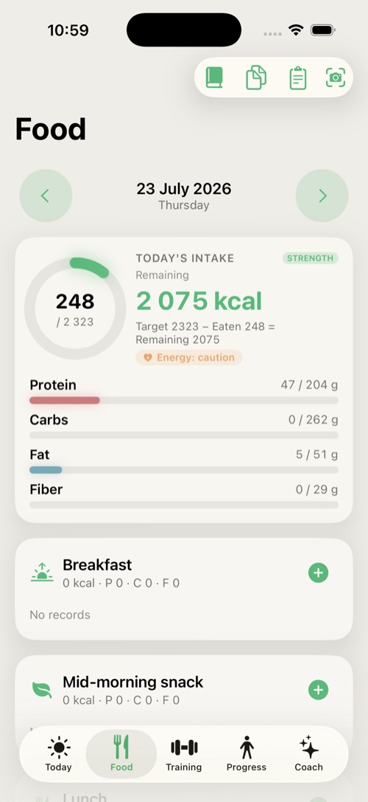
| Method | How | Availability |
|---|---|---|
| Search | Type a name, pick a result, set the amount. Side dishes can be added in the same flow. | Free |
| Barcode | Point the camera at the barcode; the product loads from the Open Food Facts database. | Free |
| AI photo scan | Photograph your plate (or pick from the gallery); the AI identifies the meal and fills in macros, which you review and confirm. | Premium |
| Nutrition label scan | Photograph the label; the AI reads the values. | Premium |
| Recipe scanner & Recipes | Scan or store multi-ingredient recipes and log portions of them. | Free |
| Quick add | Type a name and kcal/protein/carbs/fat/fiber directly. | Free |
| Favorites / Recent / Frequent | One-tap re-logging of foods you use often (save with the heart icon). | Free |
Tip: Photo scans work offline too — they are queued and processed when you’re back online. A banner shows pending and failed scans; tap it to open the scan queue.
Tip for the best result: The scanner has three modes — Barcode · Label · Food. If a product isn’t found by barcode (missing from the Open Food Facts database), switch to Label mode and photograph the packaging’s nutrition table (values per 100 g or per serving). The AI reads the macros from it and fills them in for you — more reliable than estimating from a plate in Food mode.

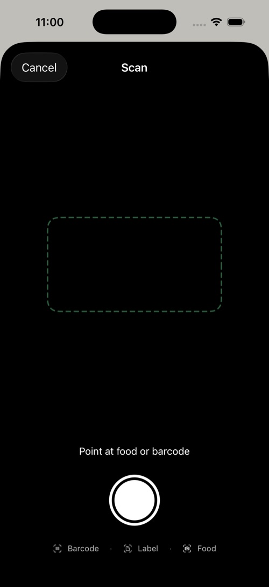
Tap any food row to edit: change grams with a ±10 g stepper or presets (50/100/150/200/300 g), or override macros entirely. Swipe or use the context menu to favorite, move to another meal, copy to today (from a past day) or delete (with confirmation).
Toolbar → Meal plan generates a full day of meals matching your current targets. You can state preferences in plain language (“Asian cuisine, no dairy”). Review the plan, tap add to day to log it, and open the Shopping list for the ingredients.
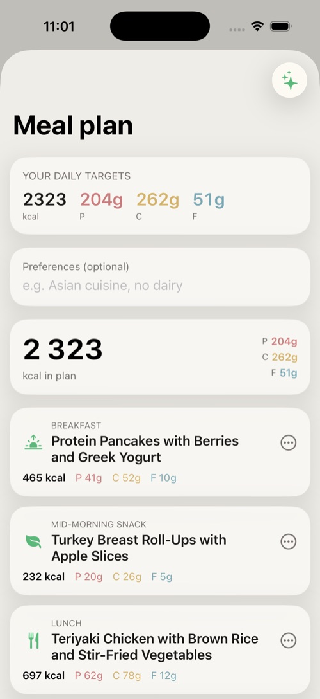
The Training tab holds your plan, your workouts and your history. It has four sub-tabs: My Plan, Gym, Sport and Library.
Your active plan: a resume-workout banner if one is in progress, the week strip, today’s workout, a section of Apple Watch workouts you can import, weekly stats and your workout history. From here you can Add activity (log cardio manually) or Create training plan.
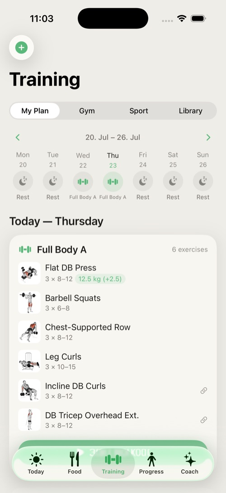
Starting a workout opens the live screen: exercises with sets and reps, a rest timer, and a Live Activity on your lock screen so you can track rest without unlocking. Finishing a session records it to history and (if allowed) to Apple Health; new Personal Records are detected automatically.
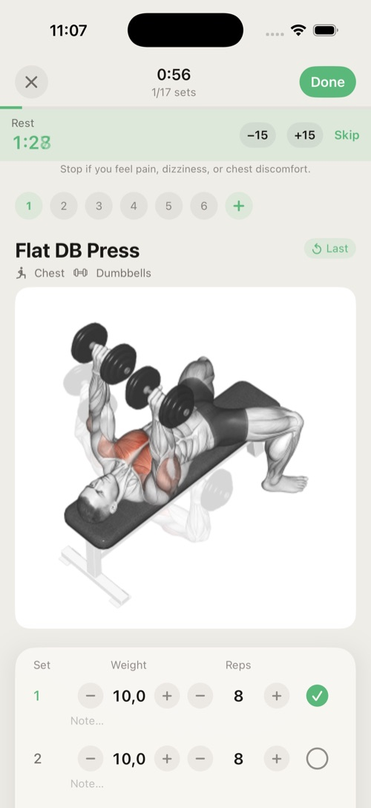
Without Premium these sub-tabs show a paywall card.
The exercise library: filter by muscle group, watch animated demonstrations, read technique instructions, and create custom exercises.
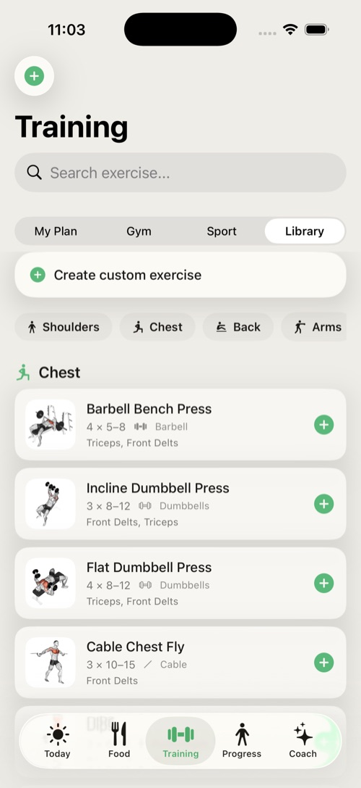
Note: The training module includes an exercise disclaimer — Subten provides guidance, not medical advice. Stop any exercise that causes pain.
The Progress tab tracks the outcome: weight, trend, body composition, measurements and photos.
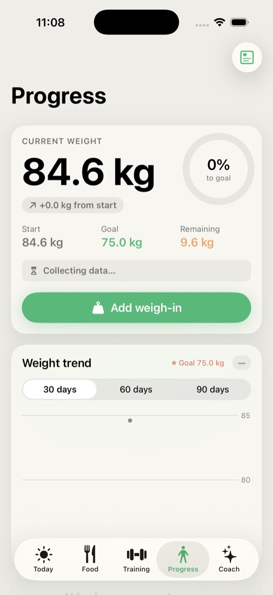
AI body assessment (Premium) estimates body composition, somatotype, muscle-group ratings and recommendations from three photos. Open it on the Progress → AI body assessment card.
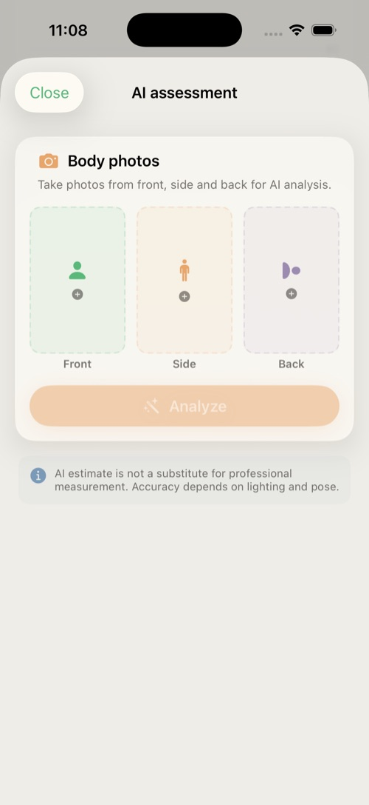
Notice — your photos are sent to an external service. The body analysis does not run on-device. The first time you use an AI feature that sends data off the phone, a consent screen appears: Subten sends your body photos and health metrics to AI model providers (e.g. Google Gemini) via OpenRouter, processed on servers in the USA, solely to produce your result. The feature will not run without consent; you can use the rest of the app without it. (This applies in Private mode too — see 8.3.)

The result is an AI estimate, not a medical measurement — accuracy depends on lighting and pose.
The Coach tab is your AI mentor: a chat that knows your data and four one-tap reviews. It explains, suggests and — with your confirmation — acts.
Note: As required by the EU AI Act, the Coach discloses that you are communicating with an AI mentor. It is not a doctor, nutritionist or trainer; for medical concerns see a professional.
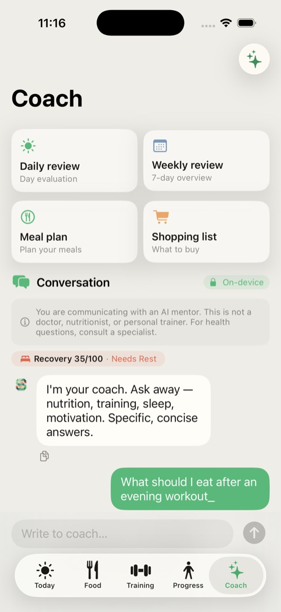
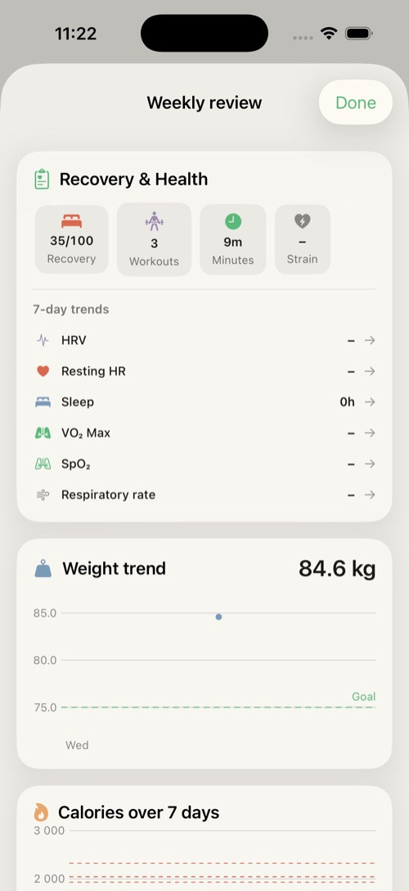
Subten can run the Coach’s text features (chat, the daily and weekly reviews, plateau analysis) directly on your iPhone — without sending anything to the cloud. This happens automatically; you don’t switch anything on.
How to tell in chat: when a Coach reply runs on the device, the conversation header shows a badge with a lock and the word “On-device”. When that badge is absent, the reply was handled by the cloud. Simple rule: lock = on-device, no lock = cloud.
The local model is only available on iPhones with 6 GB of RAM or more. On weaker devices (under 6 GB) the Coach always uses the cloud and the “On-device” badge never appears.
For on-device AI to work, Subten needs a language model (~3 GB). The fine-tune adapter ships inside the app, but the base model itself is downloaded after install, like this:
In practice: after the first install, leave the phone on Wi-Fi for a while and on-device AI prepares itself. Until then the app works normally, just via the cloud.
Subten decides automatically — you don’t switch anything. The local (on-device) model is used when all three conditions hold at once:
In that case the reply carries the on-device badge and nothing leaves the phone. In every other case the cloud (OpenRouter API) is used:
| Feature | Where it runs |
|---|---|
| Chat, daily/weekly review, plateau analysis (SK/CS/EN) | Local* |
| Food photo scan, nutrition-label and recipe scan | Always cloud |
| AI body assessment (sends photos) | Always cloud |
| AI meal plan, AI food estimation | Always cloud |
| Chat that logs a food/activity to your diary | Cloud |
| Unsupported language, or the model isn’t ready yet | Cloud |
* If local generation fails, Subten silently falls back to the cloud so you still get an answer (except in Private mode).
On iPhones with 6 GB of RAM or more, Settings has a Private mode: AI on device only toggle. The normal (automatic) behaviour already prefers the device; this toggle additionally disables the cloud fallback for the Coach’s text features — if the local model can’t answer, it shows an honest error rather than sending data to the cloud. Offline behaves the same as Private mode.
Even in Private mode, cloud features stay in the cloud: food, label and recipe scans, AI food estimation, meal plans and body assessment (which send your photos) — these simply won’t run without the cloud.
The Coach is a Premium feature; without Premium the tab shows an unlock card.
This chapter explains, in user terms, how your targets change over time. You don’t need to do anything for this to work — just log food and weigh-ins.
The engine will not touch your targets until it has: at least 14 days of history, at least 10 days with logged intake, and at least 3 weigh-ins. Until then the Today tab shows the calibration banner. The starting targets are deliberately conservative.
Every 7 days the engine measures your true maintenance from real data: your average intake and your actual weight trend together reveal how much you really burn. Your new daily goal is that measured maintenance plus your goal’s deficit or surplus. Safety rails:
When targets change you’ll see the Adapted this week badge on the Today tab, and the Coach can explain the change.
Your ETA is recomputed from the measured trend. It can read collecting data, no clear trend, goal reached, or an actual date. If the current trend would take longer than about two years, the app caps the estimate rather than display fiction.
Settings → Advanced → Life situations & Strategies (and the strategy hub) offer planned protocols:
| Strategy | What it does |
|---|---|
| Cheat meal | One planned free meal; the day is excluded from adaptation. |
| Refeed | A planned higher-carb day, useful in long fat-loss phases. |
| Diet break | 1–2 weeks at maintenance; the engine pauses adaptation. |
| Plateau protocol | A structured response when weight stalls despite compliance. |
Using the built-in strategies (instead of ad-hoc off-plan days) keeps your data clean and your adaptation accurate.
The Subten Apple Watch app is an optional bonus — a convenient glance at your day right on your wrist (rings, water, complications). It is not required to use Subten: the health data (recovery, sleep, heart rate…) is read from Apple Health independently of it, so any other brand of watch or wearable sensor that feeds Apple Health works just as well (see chapter 11).
The Watch home screen mirrors your day:
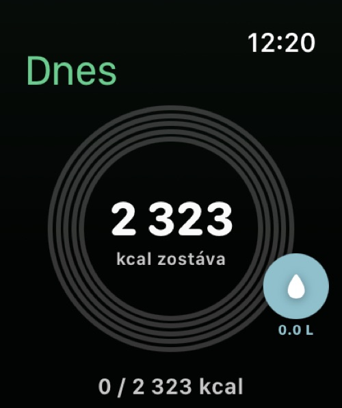
Add the Subten complication to your watch face for at-a-glance remaining calories; the iPhone widget does the same on your home screen.
On iPhone 15 Pro and newer you can map the Action Button to Subten’s Add food or Scan food intent. The same intents work with Siri and the Shortcuts app; the Watch adds a Log Water intent.
Subten asks for Health access only when you explicitly enable it (onboarding step 7 or Settings → Health). You control each type separately.
Subten reads whatever is in Apple Health, regardless of which device wrote it. An Apple Watch is not required — anything that feeds Apple Health works: an Apple Watch, Garmin, Oura, Whoop, other bands and rings, or the iPhone itself (steps, sleep). The more data Apple Health holds, the more accurate recovery and recommendations are; without it Subten still works, those features just stay empty.
| Data | Direction |
|---|---|
| Weight | read and write |
| Steps, Active energy, Workouts, Sleep, Water | read |
| HRV, resting heart rate, SpO₂, respiratory rate, wrist temperature | read (recovery score) |
| Consumed calories, macros, water | write |
Health alerts: when the data shows anomalies (unusual SpO₂, respiratory rate, heart rate, HRV, temperature or sleep), Subten surfaces a banner on the Today tab. These are informational nudges, not diagnoses.
Tip: If numbers look doubled (e.g. a workout counted twice), check that only one app writes workouts, or disable that type’s sync in Settings → Health → Sync by type.
| Feature | Free | Premium |
|---|---|---|
| Food logging: search, barcode, manual, recipes, favorites | ✓ | ✓ |
| Dashboard, Progress, streaks | ✓ | ✓ |
| Training — My Plan, Library | ✓ | ✓ |
| Apple Health sync, reminders, Watch app | ✓ | ✓ |
| Data export & import | ✓ | ✓ |
| AI photo & label scanning | — | ✓ |
| AI meal plans & shopping list | — | ✓ |
| AI Coach (chat, reviews) | — | ✓ |
| Training — Gym & Sport, Personal Records | — | ✓ |
| Sport Packs | — | ✓ |
| iCloud sync | — | ✓ |
The paywall offers Monthly and Yearly plans (Yearly is marked Best value with a per-month breakdown) with a free-trial period. Purchases go through your Apple ID; subscriptions auto-renew until cancelled in iOS Settings. Restore purchases recovers an existing subscription on a new device. A promo code field accepts codes.
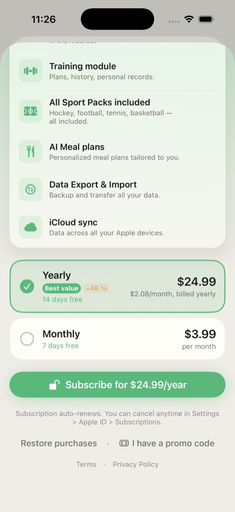
A local free trial starts when you finish onboarding. When it ends, AI and premium training features lock again and the app shows Trial expired — Activate Premium. Your data is never locked away: logging, progress and export stay free.
Open Settings from the gear on the Today tab.
| Section | What is there |
|---|---|
| Edit profile & goals | Change weight targets, goal, pace, activity — targets recompute. |
| Subscription | Premium status, activation, promo code. |
| Private mode | On-device-only AI toggle (6 GB+ devices, see §8.3). |
| Reminders | Breakfast, lunch, dinner, water, training, weigh-in — each with its own time. |
| Health | Master toggle plus per-type sync switches. |
| Units | kg / lbs (display only). |
| Language | English / Slovak / Czech (restart required). |
| Advanced | Life situations & Strategies; Export & Import of your data. |
| Feedback | Send feedback to the developer. |
| Account | Sign out; Delete account & data. |
| AI in Subten | What the AI features do, the AI data-sharing consent toggle, privacy policy and disclaimer. |
| About | Version information. |
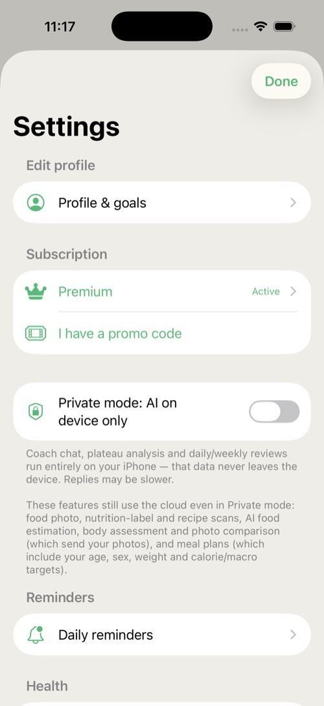
A banner says “Food database failed to load.” Tap Retry. If it persists, force-quit and reopen the app.
My photo scan is stuck “pending.” Scans queue offline and process automatically once you’re online. Open the scan queue from the banner to retry failed items.
Prices don’t load on the paywall. Price unavailable, try again later means the App Store didn’t respond — tap Retry, check your connection.
My targets haven’t changed in weeks. Check you meet the calibration minimums (§9.1): enough logged days and at least 3 weigh-ins in the window. Diet-break weeks are skipped by design.
Remaining doesn’t grow when I exercise. By design — see the energy model (§2.2).
Steps/weight don’t sync. Check Settings → Health: the master toggle and the per-type switch. Then check iOS Settings → Privacy & Security → Health → Subten.
I changed the language but the app is mixed. Restart the app — the language switch requires it.
The Coach tab just shows an unlock card. The Coach is Premium; start the trial or subscribe. If you are Premium, tap Restore purchases on the paywall.
I can’t select my birth date. Subten is 18+; the picker enforces it.
Deleting my account failed. You need a network connection (the server copy must be wiped too). Try again online; contact support via Settings → Feedback if it persists.
| Term | Meaning |
|---|---|
| BMR | Basal metabolic rate — energy burned at complete rest. |
| TDEE | Total daily energy expenditure — BMR plus all activity; your true maintenance. |
| Deficit / surplus | Eating below / above maintenance — the driver of fat loss / muscle gain. |
| Macros | Protein, carbohydrates, fat (Subten also tracks fiber). |
| Recomposition | Losing fat and building muscle in the same period. |
| Energy Availability (EA) | Energy left for the body after training; chronically low EA harms health and adaptation. |
| Day type | Strength / Cardio / Rest / Custom — drives per-day targets (carb cycling). |
| Calibration | The first ~2 weeks in which Subten gathers data before adapting targets. |
| Refeed | A planned higher-carb day within a diet phase. |
| Diet break | A planned 1–2 week pause at maintenance calories. |
| Streak | Consecutive days of logging. |
| HRV | Heart-rate variability — a recovery indicator read from Apple Health. |
| Live Activity | The iOS lock-screen widget shown during an active workout. |
Subten — User Manual · v1.0 · © 2026